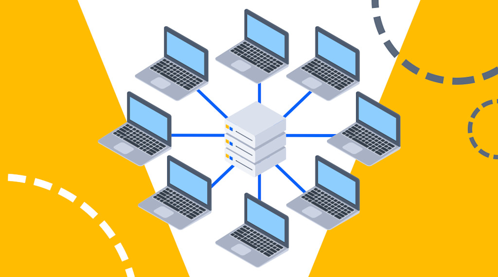

Intranet
A private internal network used within an organization.

Definition of Intranet
An intranet is a private computer network confined within an organization or enterprise that uses the same TCP/IP Internet technologies and web protocols but operates in a closed, restricted environment accessible only to authorized internal members. Intranets apply the friendly interface and accessibility of the public web to internal organizational information sharing, creating a centralized hub for employee communication, collaboration, and access to company resources. Unlike the Internet which is public and globally accessible, intranets are protected by firewalls and authentication systems preventing external access. Organizations typically develop custom intranet applications for specific business needs including document sharing, project management, HR functions, internal directories, and employee communications. Intranets dramatically improve organizational efficiency, reduce paper usage, and provide consistent access to information across geographic locations.
How Intranets Function
Intranets operate similarly to the public web: employees use browsers to access intranet web pages hosted on internal servers, but all communication remains within the organization's network protected by firewalls. Access requires authentication (login credentials) and typically role-based access control (RBAC) restricts employee access to information relevant to their department or role. The intranet infrastructure may include multiple servers for redundancy and performance, with connections to backend databases containing employee records, financial data, project information, and other sensitive content. Many modern intranets integrate with company directories (LDAP/Active Directory), email systems, and other enterprise applications creating a unified digital workplace.
Key Intranet Components
- Internal Web Servers: Host intranet websites and applications on the company's network
- Database Servers: Store employee data, documents, project information, and business intelligence
- Authentication System (LDAP/Active Directory): Centralized directory of users and access permissions for secure login
- Firewall: Protects the entire intranet from external access and unauthorized connections
- Search Functionality: Employees search intranet content (documents, people, projects) instead of using external search engines
- Collaboration Tools: Wikis, forums, team workspaces for internal knowledge sharing and project collaboration
Common Intranet Applications
- Employee Directory and Profiles: Find colleagues, contact information, organizational structure, expertise
- Document Management: Centralized storage, versioning, and workflow for company documents, policies, procedures
- HR Portal: Access benefits information, submit time off requests, view paychecks, submit expense reports
- News and Announcements: Company communications, executive updates, event calendars
- Project Management: Track project status, assign tasks, share deliverables
- Knowledge Base: Internal wiki containing procedures, troubleshooting, best practices
- Training Management: Access online courses, certifications, learning materials
Intranet Benefits for Organizations
- Improved Communication: Centralized hub for company news reducing email overload and miscommunication
- Enhanced Productivity: Employees quickly find needed information without asking colleagues repeatedly
- Better Collaboration: Teams in different locations can efficiently work together on projects
- Cost Reduction: Reduced printing, paper storage, and physical document distribution
- Data Security: Sensitive information restricted to internal network rather than public internet
- Compliance: Controlled access and audit trails help meet regulatory requirements
Uses of Intranet
- Internal communication between staff
- Sharing company documents and resources
- Access to internal applications and databases
- Collaboration between departments
Security
Intranets are protected by firewalls, authentication systems, and access control to ensure that only authorized users can access internal resources.
Intranet vs Internet
- Intranet: Private and restricted to an organization
- Internet: Public and accessible worldwide
💡 Intranet = Private Internet for organizations.
Intranet Components
- Web Server: Hosts internal websites and applications
- Database Server: Stores organizational data securely
- Authentication System: Manages user logins and access rights (LDAP, Active Directory)
- Firewall: Blocks unauthorized external access
- Email Server: Handles internal and external email communication
- File Server: Provides shared storage for documents
Modern Intranet Features
- Company news and announcements dashboard
- Employee directories and contact information
- Document management and version control
- Project collaboration tools and workspaces
- HR portals for benefits and policy access
- IT support ticketing systems
- Internal wikis and knowledge bases
- Video conferencing integration
Benefits for Organizations
- Improved Communication: Central hub for company information
- Enhanced Productivity: Quick access to tools and resources
- Better Collaboration: Teams can work together seamlessly
- Cost Savings: Reduces printing and physical document storage
- Data Security: Sensitive information stays within the organization
- Standardization: Consistent tools and processes across departments
Popular Intranet Platforms
- Microsoft SharePoint
- Confluence by Atlassian
- Jive
- Igloo Software
- Google Workspace (for smaller organizations)
🏢 95% of Fortune 500 companies use intranets to connect employees and streamline operations.